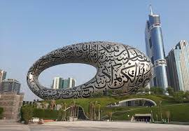
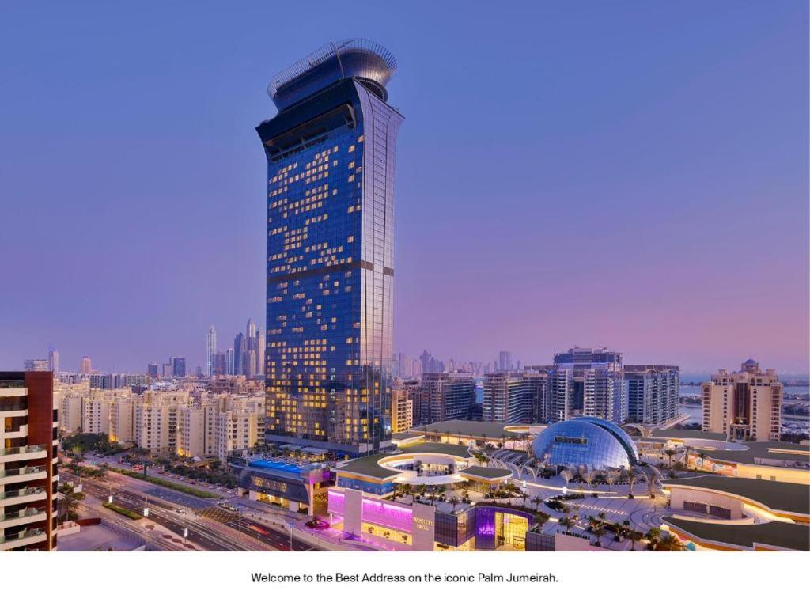

Welcome to the most lively city:Dubai
Dubai is a city and emirate in the United Arab Emirates known for luxury shopping, ultramodern architecture and a lively nightlife scene. Burj Khalifa, an 830m-tall tower, dominates the skyscraper-filled skyline. At its foot lies Dubai Fountain, with jets and lights choreographed to music. On artificial islands just offshore is Atlantis, The Palm, a resort with water and marine-animal parks.
5 main attractions in Dubai
-
Ain Dubai

Ain Dubai previously named the Dubai Eye or Dubai-I, at Bluewaters Island in the United Arab Emirates, is the world's tallest and largest observation wheel, with a height of 250 m (820 ft) and was announced in February 2013. 3 Hyundai Engineering & Construction and Starneth Engineering were appointed as the primary design and construction contractors,34 together with KCI, the engineers who designed and engineered the complete wheel structure including the installation engineering. Construction began in May 2015,5 anticipating completion in early to mid-2019.
-
Desert Safari

6-7 Hours Thrilling Tour With Sand Dune Bash, Dinner, Camel Ride, 3 Live Shows & Much More. Book Now To Explore Dubai Deserts With Non-Stop Fun. Instant Confirmation With VIP Service.
-
Burj Khalifa

Burj Khalifa stands as an anchor to the world's most prestigious square kilometre. Downtown Dubai which is also described as "The Centre of Now". Downtown Dubai is AED 73 billion (US$20 billion) flagship project of Emaar Properties. It is a mixed-use, 500-acre development featuring world-class assets including commercial, residential, hotel, entertainment, shopping and leisure components set in open green spaces dotted with lakes and other distinct water features.
-
Future Museum
The Museum of the Future will be a place of tolerance, inviting varied cultural, philosophical, social and spiritual outlooks. It will also a be place of learning, where you join us in exploring the challenges and opportunities shaping our times, and finding solutions for a better future.
-
Palm Tower
The View at The Palm is a stunning new public observation deck towering 240 metres above Palm Jumeirah, on the 52nd floor of The Palm Tower. The attraction will be the only location in Dubai offering the unique experience of spectacular views of Palm Jumeirah, the Arabian Gulf and the Dubai skyline, along with an interactive experience about the making of Palm Jumeirah. Visitors to The View will start their journey at the roof plaza of Nakheel Mall. From there, an elevator, complete with a floor-to-ceiling digital sea, sand and sky experience, will take them on the three-minute ascent to the observatory at the top of The Palm Tower, where they can marvel at the island beneath them and enjoy 360-degree views of Dubai.